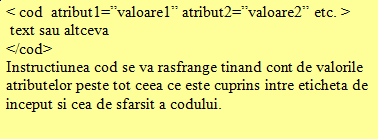

Limbajul de baza pentru editarea paginilor web este HTML, o prescurtare din limba engleza pentru Hyper Text Markup Language, adica limbaj de marcare a hipertextului.
Hypertext inseamna o portiune din textul paginii web care lucreaza ca o hiperlegaturaScrierea codurilor foloseste ca marcaje semnele "<" si ">", intre cele doua semne editandu-se codurile. Un ansamblu format din cele doua semne si codul scris intre ele se numeste Eticheta (Tag).
Etichetele pot fi pereche:
In interiorul unei etichete pot fi editate atribute care sa personalizeze efectul produs de cod.
Sintaxa utilizarii atributelor este:

Denumirea codurilor si a atributelorlor pot fi scrise sau cu caractere mici sau cu caractere mari, browserul interpretand corect instructiunile in ambele cazuri. Pentru o mai usoara citire a codului sursa este util insa ca numele etichetelor sa fie editate cu litere majuscule.
Ce "stie" HTML?Acest limbaj de baza pentru crearea paginilor web permite crearea unor pagini atractive care cuprind pe langa text si imagini, sunete, video-uri, linkuri spre alte pagini web, etc. Este limbajul pe care ar trebui sa il cunoasca oricine care incepe sa se pregateasca pentru a deveni un web designer, ca un prim pas in cunoastere.
Ce "nu stie" HTML? Cu siguranta ca folosirea doar a limbajului HTML nu ne ajuta sa creem pagini web interactive sau cu efecte dinamice... HTML poate fi completat cu alte limbaje de script care sa rezolve aceast neajuns... Cei care vor sa devina maestri ai realizarii de situri web au de ales intre o multime de programe de completare.